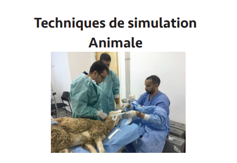

Le centre de simulation et d’innovation en sciences de la santé (CSI2S) de la faculté de médecine et de pharmacie de Marrakech est une unité de pédagogie innovant de l’Université Cadi Ayyad et labélisé dans le cadre de « la cité de l’innovation », il fonctionne comme un laboratoire universitaire (développant de la pédagogie et de la recherche), et se concentre sur la pédagogie médicale en utilisant l’Enseignement basé sur les technologies numériques et la simulation. C’est un centre multidisciplinaire (intégrant toutes les spécialités), et cible les formations médicales initiale, spécialisée et continue, et transdisciplinaire (intégrant de nombreux professionnels et métiers de la santé). Le CSI2S a pour objectifs de répondre aux besoins de formation croissants des professionnels de santé, ainsi que de participer aux efforts nécessaires d’amélioration de la qualité et la sécurité des soins. Au travers des solutions numériques et de simulation innovantes, le centre vise à améliorer l’enseignement médical et paramédical en plaçant l’étudiant comme acteur de sa propre formation, et à améliorer la qualité et la sécurité des soins en renforçant la notion de gestion des risques en médecine. Grâce à la mise en jeu de ces différents outils qui permettent de reproduire de façon plus ou moins réaliste des situations cliniques, la simulation permet une amélioration importante de la formation des professions médicales. Cette amélioration est notamment liée à la participation active et à l’adhésion forte des apprenants dans ce processus d’apprentissage. Elle permet également de combler, de faciliter et d’homogénéiser la formation médicale. Une littérature scientifique abondante démontre clairement tout l’intérêt de ces approches pédagogiques innovantes et structurantes déjà très développées et organisées à l’étranger au niveau hospitalo-universitaire. De nombreux outils sont actuellement disponibles pour réaliser des séances de simulation, néanmoins leur coût et certaines contraintes techniques rendent parfois l’accès difficile pour certains apprenants. Ce qui ouvre des perspectives importantes de recherche et de développement au sein de l’université, avec les différents départements des différentes facultés et instituts. L’université Cadi Ayyad (université leader au niveau national), puis le centre hospitalier Mohamed VI de Marrakech (premier acteur de soins au sud du Maroc) ont toute vocation à en porter les ambitions au plus haut niveau.
La médecine a opéré au cours des dernières années une prise de conscience salutaire sur la nécessité d’améliorer la qualité des soins. Le rapport de l’Institut de Médecine américain “To Err Is Human” indique bien que la nécessité de se préoccuper de la sécurité et de la qualité des soins médicaux est désormais exigée par la société et les patients, devenus aussi consommateurs, voire procéduriers. Il n’est plus acceptable ni accepté que les accidents soient le prix à payer pour les inestimables bénéfices attendus des progrès de la médecine, comme cela a été le cas jusqu’il y a peu. Et pourtant cette «insécurité », cette « non qualité » des soins persistent, ce d’autant que la médecine soigne des affections de plus en plus sévères, par des techniques et des soins de plus en plus puissants mais aussi plus complexes, impliquant un risque accru d’effets indésirables ou d’erreurs, si parallèlement, des efforts ne sont pas entrepris pour maîtriser la complexité de ces soins. Ces paramètres de non qualité des soins sont générateurs d’évènements indésirables graves, voire causes de mortalité. La médecine moderne implique par ailleurs un nombre croissant d’intervenants, de culture et de formation différentes, de plus en plus compétents, mais sur des sujets plus étroits, imposants de travailler pro-activement sur le renforcement de la communication entre ces équipes. Un des challenges des années à venir sera de renforcer la maitrise des risques de soins, en recentrant les formations des professionnels sur ces notions dès la Faculté de Médecine, afin de permettre un travail en équipe optimal, quelles que soient les situations auxquelles ces équipes sont confrontées. -8- Cette évolution culturelle met les professionnels devant une responsabilité immense, celle d’imaginer de nouvelles façons d’enseigner, de transmettre des connaissances, puis des compétences, qui doivent, en équipe, se transformer en performances pour le meilleur être des patients. Cette révolution intervient dans le contexte compliqué de plus d’étudiants à former (réouverture du numerus clausus) avec moins d’enseignants, pas nécessairement plus de moyens, et des cycles de connaissances courts (5 ans en moyenne). Dans ce contexte où on est confronté à l’afflux d’étudiants, le manque de formateurs, et de patients «standardisés» pour l’apprentissage, cette transformation pose un certain nombre d’interrogations, et amène à repenser le modèle actuel en intégrant les points suivants : • Repenser la base scientifique de l’enseignement médical classique, • Evaluer la distance réelle entre les connaissances sur les mécanismes d’apprentissage et les principes actuels d’enseignement, • Proposer l’apport des neurosciences, des sciences cognitives et comportementales dans l’évolution de l’enseignement médical, • Remettre le principe « Primum non nocere » au centre de nos impératifs d’enseignement au lit du patient, et par conséquent appliquer le principe éthique majeur : « Jamais la première fois sur le patient. » • Accompagner l’évolution de l’enseignement médical par l’évolution vers des standards de qualité et de sécurité des soins. L’utilisation des techniques de simulation est un moyen performant et moderne permettant de répondre à ces différentes problématiques en permettant d’améliorer conjointement les connaissances personnelles, les capacités d’utilisation de ces connaissances, l’efficacité et la cohésion des équipes, dans des conditions de sécurité optimales pour les patients. -9- Elle permet alors, la formation dans des conditions très proches du réel, dans des situations pédagogiquement parfaites, et sans contraintes vis-à-vis des patients.
La recherche constante d’amélioration de la qualité et de la sécurité des soins, centrée sur les patients, oblige les différents acteurs de santé (professionnels de santé, facultés de médecine), à faire évoluer les méthodes d’enseignement médical en intégrant la notion de gestion des risques et de performance. A ce titre, il est particulièrement important de pouvoir proposer au sein des programmes pédagogiques existants des solutions innovantes, et dont l’efficacité a été démontrée, permettant d’intégrer ces notions dans l’apprentissage des étudiants. Un des aspects importants de la pédagogie médicale est de pouvoir s’assurer que l’enseignement effectué est effectivement reçu, intégré, et compris par les étudiants. C’est un prérequis indispensable avant de pouvoir demander la mise en pratique de raisonnements diagnostiques ou thérapeutiques par exemple. L’environnement pédagogique classique fait intervenir la restitution par les étudiants de raisonnements diagnostiques et thérapeutiques parfois complexes sans démonstration de la maitrise de techniques indispensables à la prise en charge des patients. Courant de constater, au travers des examens écrits, ou de l’observation des étudiants dans leur service hospitaliers, l’existence de lacunes dans la maitrise de certaines techniques ou dans le comportement en équipe soignante. Ces lacunes résultent simplement de la structure de l’enseignement médical classique. -10- Par exemple, l’enseignement actuel ne permet pas à tous les étudiants en fin de cursus de savoir effectuer de façon adaptée la réanimation d’un arrêt cardio--respiratoire, tant au niveau des gestes techniques que de la gestion d’une équipe en situation critique. L’intégration de la simulation médicale dans un programme d’enseignement classique nécessite d’avoir parfaitement sélectionné les domaines où les séances de simulation peuvent ajouter une valeur pédagogique au programme. L’environnement d’apprentissage va notamment jouer un rôle majeur, en augmentant l’impact de l’expérience. La simulation médicale ajoute une valeur importante à de nombreux niveaux de l’enseignement médical, et dans de nombreuses disciplines. Il est particulièrement important de bien définir ces niveaux et disciplines, puis d’y associer des objectifs pédagogiques et des modalités d’évaluation adaptés de ces objectifs. De nombreux enseignements peuvent s’enrichir de l’apport de la simulation médicale, quelles que soient les modalités de simulation (mannequins mono tâches, simulation informatique, mannequins haute-fidélité etc.). Les innovations et avancées technologiques offrent aujourd’hui des possibilités, pour la formation aux soins, jusqu’ici indisponibles. Les simulateurs patients reproduisent au plus près les réponses physiologiques aux interventions cliniques, les mannequins étant de plus en plus proches de la réalité. Un logiciel sophistiqué permet d’optimiser chaque mise en situation et de faire évoluer le simulateur en fonction, par exemple, des thérapeutiques délivrées. La simulation offre des moyens cohérents, reproductibles et universellement validés, ainsi toutes les interventions peuvent être mesurées et standardisées. -11- Avec la simulation médicale, il est également possible de former des praticiens ou futurs praticiens sur des cas rares, très rarement rencontrés dans la vie professionnelle ; ainsi ils seront en mesure de soigner le patient de manière optimale, si cela devait se produire réellement. Les techniques de simulation médicale ne sont pas nouvelles et ont déjà été utilisées au sein de certains programmes pédagogiques. Cependant, leur utilisation a été largement réactualisée et repensée grâce au développement de nouvelles théories cognitive, à l’analyse des causes d’erreurs médicales et d’accidents iatrogènes, et à l’analyse de processus décisionnels dans les industries à hauts risques comme l’industrie aéronautique.

La simulation médicale correspond à l’utilisation d’un matériel (mannequin haute ou basse fidélité, simulateur procédural), de la réalité virtuelle ou d’un patient standardisé afin de reproduire une situation ou un environnement de soins dans le but d’enseigner, à un professionnel de santé ou à une équipe de professionnels, des procédures diagnostiques ou thérapeutiques ou de prise de décisions et de répéter, de manière reproductible, ces procédures. Elle s’adresse à tous les professionnels de santé et permet de : → Former à des procédures, à des gestes ou à la prise en charge de situations. → acquérir et réactualiser des connaissances et des compétences techniques (travail en équipe, communication entre professionnels ...). → Analyser ses pratiques professionnelles en faisant porter un nouveau regard sur soi-même lors du débriefing. → Aborder les situations dites « à risque pour le patient » et d’améliorer la capacité à y faire face en participant à des scénarios qui peuvent être répétés. → Reconstituer des événements indésirables, de les comprendre lors du débriefing et de mettre en œuvre des actions d’amélioration de la qualité et de la sécurité des soins.
La simulation est basée sur l’apprentissage expérientiel, la pratique réflexive et sur l’idée qu’il est important de développer les compétences avant, pendant et après interactions avec les « vrais » patients. Elle ouvre une infinie voie de recherche sous ses formes les plus diverses. « Un concept Récent » -14- C’est un mode d'apprentissage par le vécu, où l'on peut travailler sur « l'erreur» puisqu'elle est autorisée sur le mannequin-patient. Elle permet l'évolution des erreurs, sans craindre de nuire. Ce mode d’apprentissage semble correspondre à nos besoins. Il est apprécié par les étudiants et les formateurs, car il permet de répondre de façon concrète aux difficultés rencontrées quotidiennement par les professionnels de santé. Un passage au simulateur permet à chacun de cerner rapidement ses limites et ses lacunes. Cela favorise le développement et le maintien des compétences, d’augmenter les capacités et de peaufiner les relations professionnels-patients pour rendre les soins plus efficaces, empathiques et en accord avec les attentes et les besoins des patients. La simulation offre l’opportunité de se former sur du nouveau matériel, ou de tester de nouvelles techniques de soins. Elle ouvre une infinie voie de recherche sous ses formes les plus diverses. C’est aussi un moyen de progresser dans la gestion des risques liés aux soins et des situations critiques. Il est désormais reconnu que la prise en charge des patients est un travail d’équipe, bien que chaque profession ait sa spécificité.
La simulation s’affirme comme une méthode pédagogique active et innovante. Aujourd'hui, cette activité au croisement de la théorie et la pratique tend à s’imposer dans le domaine de la santé. Cela répond à une double logique : « Développer l’Expertise Professionnelle et Améliorer la Sécurité des Soins ». Elle ajoute une valeur importante à de nombreux niveaux de l’enseignement médical, et dans de nombreuses disciplines. Il est particulièrement important de bien définir ces niveaux et disciplines, puis « Méthode Pédagogique Incontournable » -15- d’y associer des objectifs pédagogiques et des modalités d’évaluation adaptés. De nombreux enseignements peuvent s’enrichir de l’apport de la simulation médicale, quelles que soient les modalités de simulation (mannequins mono tâches, simulation informatique, mannequins haute-fidélité etc.). Les innovations et avancées technologiques offrent aujourd’hui des possibilités, pour la formation aux soins, jusqu’ici indisponible.
Apprentissage contextualisé basé sur l’expérience et la pratique réflexive (D’après Miller Acad. Med. 1990)
La simulation en santé permet de recréer des scénarios dans un environnement réaliste avec, comme double objectif, le retour d’expérience et l’évaluation des acquis. Ce sont des situations cliniques et/ou professionnelles, simples ou complexes, habituelles ou exceptionnelles, qui servent de support à la construction des scénarios. Différentes techniques de simulation peuvent être choisies en fonction des objectifs pédagogiques des scénarios pour permettre: • l’entraînement à des gestes techniques (usuels ou exceptionnels). • la mise en œuvre de procédures…. L’enseignement en simulation médicale répond donc à une méthodologie précise qui consiste toujours en la succession de trois phases. D’abord un Briefing qui présente les objectifs de formation et le laboratoire où celle-ci va se dérouler. Puis la Simulation proprement dite où les participants jouent le scénario qui a été conçu spécialement pour travailler les objectifs présentés initialement. La troisième phase qui est indispensable dans l’apprentissage en simulation médicale : le Débriefing.
Le briefing est un temps indispensable de familiarisation des apprenants avec le matériel, de présentation du contexte ainsi que de l’environnement. Le scénario se déroule par les apprenants et il est guidé par un formateur, facilité en partie grâce à une programmation complète des et un enregistrement vidéo et/ou une indexation temps réel des événements. Le Débriefing comporte 3 phases : 1 - La phase descriptive: Aborder avec les apprenants la manière dont ils ont vécu la séance de simulation en les invitant à exprimer leur impressions et leur ressenti. 2 - La phase d’analyse: Explorer les raisons pour lesquelles les actions ont été réalisées ou au contraire non réalisées avec interprétation du raisonnement. 3 - La phase d’application ou de synthèse: faire une synthèse de ce qu’ils ont appris de la situation simulée. La durée du débriefing dépend du déroulement du scénario. Deux éléments sont évoqués lors du débriefing: a. La gestion du stress: un des éléments importants de la simulation est qu’elle permet aux apprenants de mieux se connaître et notamment de développer des métaconnaissances de son stress. b. La gestion de l’échec: l’investissement psychologique peut conduire à des situations de débriefing difficiles. En cas d’échec lors du déroulement du scénario de simulation la prise en compte de l’impact émotionnel fait partie de la gestion globale du débriefing par le formateur. L’enregistrement vidéo et/ou une indexation temps réel des événements peuvent être utilisés comme support de débriefing Le bon déroulement d’un débriefing dépend du niveau de compétences des apprenants et des formateurs.
C’est un programme de formation et/ou d’analyse de pratiques et/ou de recherche qui utilise la simulation. Les programmes de simulation peuvent être réalisés et mis en œuvre aussi bien dans le cadre de la formation initiale, de la formation continue ou du développement professionnel continu. Dans le cas du DPC, ils doivent nécessairement intégrer des objectifs de formation et d’analyse des pratiques et comporter un ou plusieurs scénarios de simulation avec débriefing et propositions d'actions d'amélioration. Les programmes de simulation sont conçus selon un processus défini et formalisé :
Les programmes de simulation peuvent être mis en place au sein de différentes infrastructures. Quelle que soit cette infrastructure, une organisation doit être identifiée et mise en place selon des éléments généraux (missions, gouvernance, etc.).
La sonde type Levin est une sonde simple courant, très souple, utilisée préférentiellement pour les nutritions entérales et l’administration de traitement.
Elle offre une excellente tolérance et sa résistance face à l’acidité digestive permet une utilisation de longue durée (max 30 jours) avec de petits calibres. Elle existe avec ou sans lest (lest en tungstène), avec ou sans mandrin. Le lest peut permettre de maintenir la sonde en bonne position. Le mandrin sert à rigidifier la sonde pour faciliter la mise en place. L’embout ou connecteur (sur lequel se branche la tubulure) peut être ou non muni d’un bouchon obturateur.
Assez rigides, sont utilisées pour de courte durée (3 à 4 j) car le PVC est dégradé par l’acidité gastrique. A une extrémité, elle comporte 2 orifices permettant une prise d’air et une connexion pour l’aspiration, l’autre extrémité comportant plusieurs orifices pour aspirer le contenu gastrique. La prise d’air est primordiale en cas d’aspiration douce car elle évite que le tuyau ne se collabe à la paroi de l’estomac et ne crée un ulcère.
| Indications | Contre-indications |
|---|---|
| • Mise au repos du système digestif en post-opératoire.
• Soulagement du patient lors de pathologies fortement émétisantes (occlusion intestinale par exemple). • Nutrition entérale par gravité ou sur pompe en cas d'altération de la conscience ou d’impossibilité de nutrition normale. • Réalisation d'un tubage gastrique. • Systématique chez le patient intubé. |
• Absolues
1. Intubation d'un patient présentant un traumatisme facial. • Risque de passage de la sonde en intracérébral si fracas du sphénoïde. • Dans ce cas, préférer la voie orale à l'aide du laryngoscope et de la pince de Magyle. • Collecteur d’aiguilles souillées • Relatives • Varices œsophagiennes risquant d'être traumatisées par la sonde. Cependant, la surveillance de l'hémorragie digestive haute est plus importante pour la majorité des auteurs. |
• Les échecs correspondent soit à l'impossibilité d'introduire la sonde soit au positionnement inadéquat de son bout distal.
• Le déplacement secondaire est fréquent, soit par arrachage intempestif par le patient ou le personnel soignant, soit par déplacement spontané, en particulier dans le sens jéjunum-estomac.
• L'obstruction par plicature ou constitution d'un noeud sont des incidents peu fréquents et rarement rapportés par rapport à l'obstruction intraluminale d'origine médicamenteuse. L'enroulement au niveau de l'arrière pharynx est banal s'il est détecté.
• L'érosion de la muqueuse nasale responsable d'épistaxis est banale, de même que l'otite, la pharyngite, la parotidite.
• La sinusite est moins banale, des signes inflammatoires apparaissant 48 h après le passage nasal de la sonde.
• L'oesophagite, liée soit à la sonde, soit au reflux gastro-oesophagien, peut être responsable d'hémorragie digestive, voire de sténose résiduelle engendrant une dysphagie secondaire. Sa fréquence est moindre depuis l'utilisation de sondes fines et souples. L'érosion de la muqueuse peut être responsable de perforations digestives.
• Une fausse route lors de la mise en place peut être lourde de conséquence, la sonde nasogastrique pouvant suivre un trajet aberrant à partir d'une perforation de l'oesophage ou en pénétrant dans la trachée. Cette fausse route sera secondairement responsable d'une inondation pulmonaire dramatique lors de l'infusion de nutriments ou d'un pneumothorax.
Une prescription médicale obligatoire complète, qualitative et quantitative, datée, signée. Elle précise le type de sonde : matériau, charrière et éventuellement l’utilisation d’un anesthésique de contact (lidocaïne spray ou gel).
Informer le malade et/ou la famille. Le médecin et l’infirmier(e) doivent expliquer les bénéfices attendus, les conditions de déroulement et les inconvénients ou risques éventuels. Le malade doit être à jeun depuis au moins six heures. La pose se réalise en position assise, avec une légère flexion du cou : permet l'ouverture de l'oesophage.
Chez un patient inconscient ou avec troubles de la vigilance, le risque de complications (fausses-routes de la sonde en particulier) impose la présence d’un plateau technique à proximité et de deux personnes pour réaliser le geste. Le malade doit, dans ce cas, être installé en décubitus latéral. Si l’introduction est difficile, la pose sera effectuée par un médecin avec utilisation éventuelle d’une pince de Magill (nettoyée et autoclavée) et d’un laryngoscope.
• PHA
• Gants non stériles à usage unique.
• Compresses non stériles.
• Lubrifiant hydrosoluble.
• Sonde nasogastrique (Salem/Levin)
• Verre d'eau.
• Seringue de 60 mL avec un embout conique.
• Stéthoscope.
• Sparadrap.
• Marqueur indélébile.
Matériel en fonction de l’indication :
• Aspiration gastrique :
- Aspiration active : Prise murale de vide munie d’un manomètre, Réceptacle à usage unique, Tuyaux, Raccord biconique.
- Aspiration par gravité : Sac de recueil, Tuyau, Raccord biconique.
• Nutrition entérale.
- Réaliser une friction avec un PHA puis enfiler des gants propres
- Employer la sonde elle-même pour mesurer la longueur requise pour atteindre l’estomac et choisir le repère sur la sonde :
o 1er repère : distance entre le lobe de l'oreille et l’arrête du nez.
o 2ème repère : ajouter au 1er repère, la distance entre l’arrête du nez et le bas de l’appendice xiphoïde.
• La sonde préalablement lubrifiée est introduite dans une narine perpendiculairement au plan du visage. Il existe souvent un orifice nasal plus perméable que l’autre ; il doit être recherché avec douceur.
• La sonde est poussée doucement sur une dizaine de centimètres jusque dans le pharynx. On demande alors au malade de déglutir calmement sa salive ou une gorgée d'eau en penchant légèrement la tête en avant. Le passage de l'œsophage est souvent plus difficile en raison de la courbure de l'extrémité de la sonde. Une rotation de 180° en facilite l'introduction.
• La sonde est poussée pendant la déglutition. Il y a alors trois possibilités :
o Si elle passe dans l'œsophage, elle est introduite jusqu'à amener le deuxième repère au niveau de l'orifice nasal ;
o Si elle s'enroule dans l'oropharynx, provoquant un réflexe nauséeux, elle est retirée de quelques centimètres et la manœuvre est recommencée;
o Si elle passe dans la trachée en s'engageant dans la glotte et provoquant un réflexe de toux, elle est retirée pour recommencer la même manœuvre.
• La sonde est considérée comme en place dans l'estomac lorsque l'aspiration ramène du liquide gastrique et lorsque l'insufflation de 20 à 40 ml d'air à l'aide de la seringue à gros embout produit dans la région épigastrique un bruit hydroaérique entendu à l'auscultation de l'abdomen.
• Elle est alors fixée sur le nez avec une cravate de sparadrap ou parfois même une suture chirurgicale.
• La tête est légèrement fléchie après le passage de l'orifice narinaire pour permettre le passage de la sonde dans l'œsophage.
• En cas de difficultés :
o La pose peut se faire sous contrôle de la vue : le carrefour aérodigestif est exposé à l'aide d'un laryngoscope ; une pince de Magill permet de saisir la sonde et de la diriger vers la bouche œsophagienne ;
o On peut aussi tenter de guider la sonde à l'aide de deux doigts gantés introduits dans la bouche du malade mais ceci expose l'opérateur au risque de morsure;
o Chez les patients intubés enfin, le déplacement vers l'avant du larynx améliore significativement le taux de réussite.
• En ce qui concerne la sonde nasogastrique, l’absence de toux et de résistance durant la pose ne présume pas de la bonne position de la sonde nasogastrique.
• Le meilleur moyen de vérification initiale de l’emplacement est le contrôle radiologique pour les sondes gastriques.
• L’auscultation épigastrique après l’injection d’air dans la sonde nasogastrique (risque de faux positif) ne garderait éventuellement une place qu’en l’absence de possibilité d’un contrôle radiologique.
• Préparer la peau (lavage, séchage)
• Poser un sparadrap, enroulé autour de la sonde au niveau de la base du nez
• Appliquer la moitié d’une bande de ruban adhésif élastique, d’environ 4 cm, sur le nez. Sa partie basse étant fendue jusqu’à la pointe du nez, chaque moitié du ruban adhésif élastique est alors enroulée autour de la sonde
• La fixation sur la joue est limitée au minimum en évitant de former une grande boucle qui rentre dans le champ visuel du patient et qui augmente les risques d’arrachement.
• Adapter la sonde en fonction de l'indication, soit au système d'aspiration et régler le manomètre, soit à l'alimentation et régler le débit.
• Maintien d'une position semi-assise du patient entre 30 et 45o ;
• Remplacer quotidiennement les fixations et surveiller la survenue d’une escarre au niveau de l'aile du nez.
• Maintenir la perméabilité de la lumière : les sondes nasogastriques doivent être vérifiées et rincées toutes les 4 à 8 heures. Elles doivent toujours être irriguées avec du sérum physiologique avant et après l'alimentation pour éviter les blocages.
• Vérification de la position de la sonde : Confirmer la position avant chaque alimentation/après déplacement ou mobilisation du patient/patient se plaignant d'une gêne.
• Changement de routine de la sonde : Suivez les instructions du fabricant.
• Retrait du tube : Retirez délicatement le ruban adhésif, pincez le tube (pour éviter tout débordement du liquide présent à l'intérieur de la tubulure), puis demandez au patient d'expirer profondément et de retirer le tube pendant l'expiration.